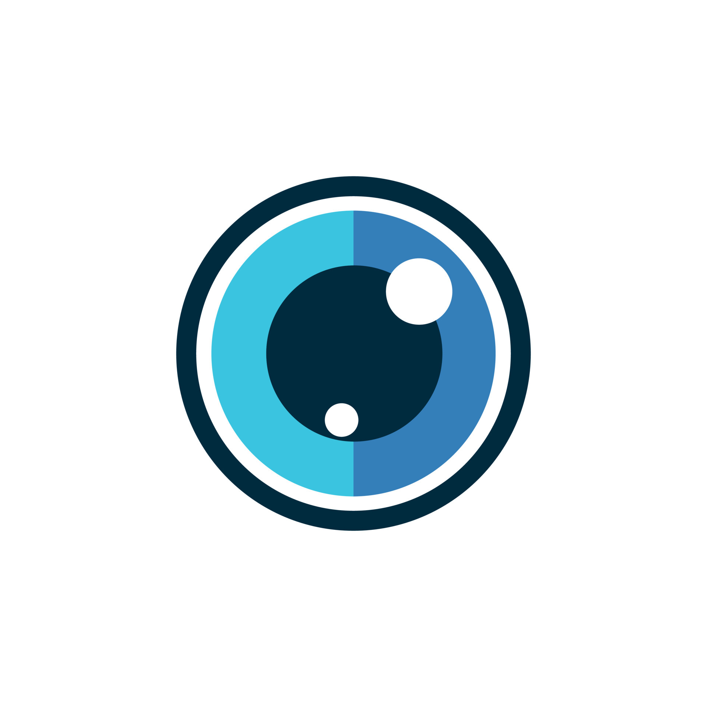

Eyes olarak, markaların sosyal medya performansını izlemek ve analiz etmek konusunda uzmanlaşmış bir ekibiz. Sosyal medya kanallarınızı takip ediyor, size özel raporlar sunuyor ve içgörüler sağlıyoruz.
Amacımız, markaların sosyal medya stratejilerini güçlendirmek ve hedef kitleleriyle etkili bir şekilde iletişim kurmalarını sağlamaktır.
